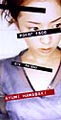
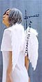
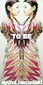
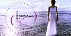
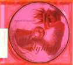

| |
|
Hamasaki Ayumi
Boys & Girl
|
생년월일
1978년 10월 2일 (천칭자리)
혈액형
A형
출신지
福岡縣 (후쿠오카현)
여성으로서 매력을 느끼는
사람
Keiko(globe) ,宮澤りえ(미야자와), 松田聖子(마쓰다
세이꼬)
음악에 대해서
친척 오빠의 영향으로 어릴 때에는 Rock(Led
Zeppelin, Deep Purple)을 들었다. 지금은 Babyface, En
Vogue등, 블랙계를 주로 듣고 있다.
좋아하는 배우
니콜라스· 케이지, 宮澤りえ
좋아하는 영화
Body Guard, Betty Blue, Livin' Las Vegas
|
|
존경하는
사람
자신이 가지고 있지 않은 것을 가지고 있는
사람
싫은 사람
거짓말하는 사람
취미
방의 인테리어 등에 관한 것, 흰 것을 모으는
일
좋아하는 음식
과자 (주식이라고 말할 정도!) , 케이크, 초콜렛
레이트(-_-;; 뭔지...), 김치(?)좋아하는 책
패션지는 거의 사고 있다. 망요집(?)을
현대어로 번역한 것을 특히 좋아한다.
銀色夏生, 相田みつを 작품 등
배우고 있는 것들
피아노, 서도 5단, 주산, 화도
자신이 쓰는 시에 대해서..
거짓말은 쓸 수 없다.??상상의 세계,
자신의 체험과 친구가 체험한 일들을
객관적으로 잡고, 정직한 기분을 ?말로 시를
써야 잘 나온다. ?어떤 때에도, 자신에게
정직해지고 싶다.
|
|
|
아유미의 음악..
|
싱글1집poker face?

싱글2집YOU
싱글4집For my dear... |
싱글7집 LOVE ~Destiny~
싱글8집 TO BE
싱글9집 Boys & Girl |
싱글12집 kanariya
싱글13집 Fly High
싱글16집 SEASONS |
|
  
|
|
|
|
 
|
|
|
아유미의 사진들..
|
|
|
|
|
|
{kind=link}
{kind=link}
{kind=link}
{kind=link}
{kind=link}
{kind=link}
{kind=link}
{kind=link}
{kind=link}
{kind=link}
{kind=link}
{kind=link}
{kind=link}
{kind=link}